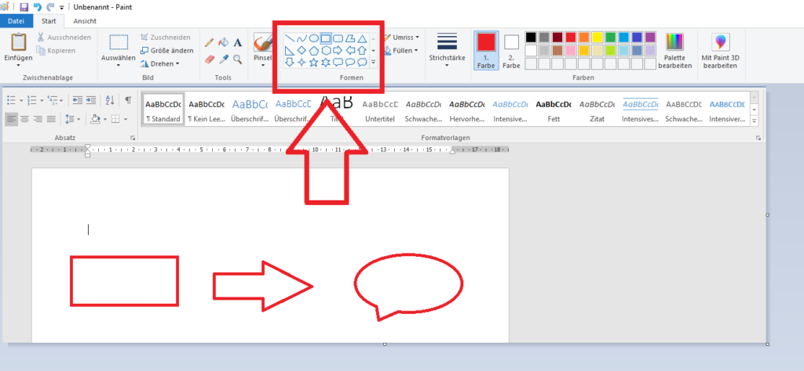
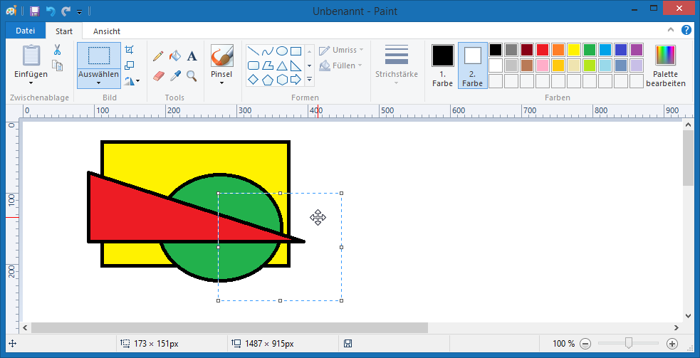

Одинаковая высота
Обе точки находятся на одном уровне: координаты Y равны.
Как получить ровную линию, идеальный квадрат и окружность? Как разместить фигуры в нужных местах рисунка, измерить расстояния и не перепутать размер с масштабом?
На уроке узнаем, как превращать простые инструменты Paint в средства точных геометрических построений .
На предыдущих уроках мы рисовали в Paint, выделяли фрагменты и собирали из них изображения. Теперь важно научиться соблюдать форму, размеры и расположение объектов. Это пригодится для схем, значков, планов и геометрических рисунков.
Правильная форма — например, четыре равные стороны у квадрата. Нужный размер — например, 80 × 80 пикселей. Точное положение — например, на 20 пикселей правее другого объекта.
В Paint уже есть знакомые инструменты «Линия», «Прямоугольник» и «Овал» . Обычно они находятся в группе «Фигуры». Цвет и толщину контура можно выбирать отдельно. Внешний вид панели зависит от версии Windows.

Задаём начало и конец отрезка, выбираем цвет и толщину.
Создаём прямоугольник, а при равных сторонах — квадрат.
Создаём овальную фигуру, а при равной ширине и высоте — окружность или круг.
Сегодня работаем с основными геометрическими инструментами. Другие готовые фигуры и преобразования рисунка будут изучаться на следующих уроках.
Линию задают две точки: начало и конец. Если обе точки имеют одинаковую высоту, линия горизонтальная. Если расположены на одной вертикали — вертикальная. Для наклонных линий важен угол направления.
Обе точки находятся на одном уровне: координаты Y равны.
Обе точки лежат на одной вертикальной линии: координаты X равны.
Поднимается вправо под углом 45° к горизонтали.
В классическом Paint при рисовании инструментом «Линия» удерживание Shift ограничивает направление отрезка: он получается горизонтальным, вертикальным или под углом 45° (и соответствующими направлениями).
Когда мы перемещаем мышь, трудно поддерживать равную ширину и высоту. Клавиша Shift помогает программе соблюдать геометрическое условие. В классических версиях Paint она используется с линией, прямоугольником и овалом.
Если используемая версия Paint ведёт себя иначе, ориентируйся на её подсказки и настройки фигур. Принцип остаётся прежним: для квадрата и окружности нужны равные ширина и высота.
Размеры растрового изображения и его элементов удобно выражать в пикселях (px). Ширина измеряется по горизонтали, высота — по вертикали. Для сравнения фигур используют запись «ширина × высота».
120 × 60 — вытянутый прямоугольник. 80 × 80 — квадрат. Для овала и окружности действует та же идея: если ширина и высота области построения равны, получается окружность.
Каждой точке рисунка можно поставить в соответствие пару координат (X; Y). В растровой графике начало координат обычно находится сверху слева. X увеличивается вправо, Y — вниз.
A (20; 30) — 20 пикселей вправо и 30 вниз от начала координат.
B (100; 30) — находится правее A на той же высоте.
C (100; 60) — находится ниже B на той же вертикали.
В школьной математике ось Y обычно направлена вверх. В координатах изображения Y растёт вниз. На рисунке показана условная схема с обозначенными координатами.
Масштаб просмотра помогает рассмотреть мелкие детали. При 200% каждый пиксель изображения отображается вдвое крупнее по ширине и высоте, чем при 100% (без учёта особенностей масштабирования интерфейса). Но количество пикселей самого рисунка не меняется.
Если рисунок имеет 100 × 100 пикселей, то при масштабе 400% он по-прежнему содержит 100 × 100 пикселей. Мы просто рассматриваем их крупнее. Изменение самого размера изображения — отдельная операция, изучаемая позднее.
Сетка помогает видеть границы пикселей при увеличении. Линейки позволяют ориентироваться по расстояниям на холсте. Эти вспомогательные элементы отображаются в редакторе, но не являются частью самого рисунка.

В классической версии Paint вспомогательные настройки обычно расположены на вкладке «Вид»: «Линейки», «Линии сетки» и масштаб. Пиксельная сетка особенно полезна при сильном увеличении; её доступность и поведение зависят от версии программы.
Для точной композиции недостаточно просто нарисовать правильные фигуры. Важно соблюдать одинаковую высоту, интервалы и положение относительно центра . Можно заранее выбрать опорную линию и сравнивать с ней расположение всех объектов.
Верхние или нижние стороны объектов лежат на общей линии.
Центры или боковые границы объектов располагаются по одной вертикали.
Между соседними фигурами оставляют одинаковое свободное расстояние.
Ось симметрии — прямая, по обе стороны которой элементы расположены зеркально. Сегодня мы будем анализировать симметричное расположение , а специальные команды отражения рассмотрим на следующем уроке.
Планируй расположение фигур перед построением: определи размеры, центры и промежутки. Тогда потребуется меньше исправлений.
Не удалось удержать одинаковую высоту концов. Используй «Линию» и Shift.
Ширина и высота оказались разными. Проверь равенство сторон или используй Shift.
Область построения вытянута. Нужна одинаковая ширина и высота.
Сравни координаты верхних или нижних границ и расстояния между ними.
Запомни: X — вправо, Y — вниз. Начало координат — верхний левый угол холста.
Скорее всего, был изменён только масштаб. Это не значит, что изменились пиксельные размеры рисунка.
Спланировать → выбрать инструмент → задать форму → проверить размеры → выровнять объекты → рассмотреть детали при увеличении.
Проверь, чем отличается точное построение от свободного рисования и как контролировать форму, размеры и положение объектов.
Что называют точным построением графического объекта?
Чем точное построение отличается от свободного рисования?
Как получить строго горизонтальную или вертикальную линию в Paint?
Для чего используется клавиша Shift при рисовании?
Чем квадрат отличается от прямоугольника?
Как построить квадрат инструментом «Прямоугольник»?
Чем окружность отличается от вытянутого овала?
Как построить окружность инструментом «Овал»?
Что обозначают ширина и высота графического объекта?
Как определяются координаты точки в растровом изображении?
Чем масштаб просмотра отличается от изменения размеров рисунка? Для чего нужны сетка и линейки?
Как расположить несколько фигур на одинаковом расстоянии и по одной линии?
Мы научились отличать свободное рисование от геометрического построения, разобрали роль Shift, размеров, координат, масштаба и сетки, а также увидели, как создавать аккуратные композиции.
Линии прямые, а ширина и высота квадрата или окружности равны.
Пиксели и размеры позволяют сравнивать фигуры и соблюдать пропорции.
Координаты, общие линии и интервалы помогают правильно разместить объекты.
Аккуратный рисунок получается, когда мы контролируем форму, размеры и положение его элементов. Специальные инструменты Paint позволяют построить геометрические объекты точнее, чем свободное рисование мышью.
Об иллюстрациях. Две реальные иллюстрации интерфейса Paint взяты из университетских учебных материалов и сопровождаются ссылками на их страницы. Остальные рисунки — специально разработанные статические схемы HTML/SVG. В разных версиях Paint названия и расположение команд могут отличаться.